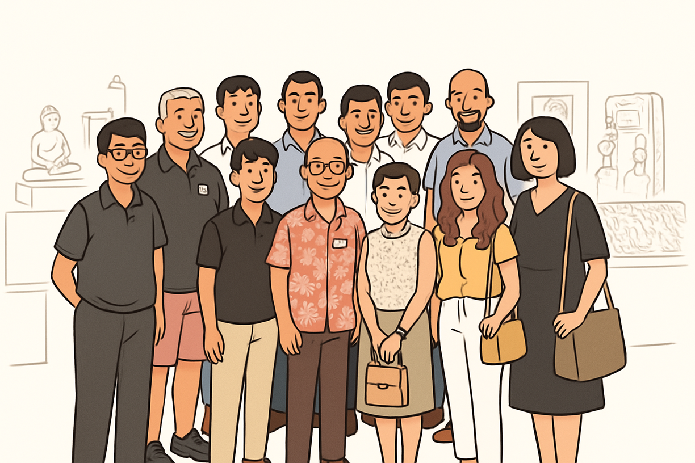

<!doctype html>
<html lang="en">
<head>
  <meta charset="utf-8">
  <meta name="viewport" content="width=device-width, initial-scale=1">
  <title>Asian Civilisations Museum | MIT Club Private Tour 28 June 2025</title>
  <style>
    :root{--ink:#2d2d2d;--muted:#6f6f6f;--line:#e5e5e5;--soft:#fafafa;--accent:#334d2c;--accent-2:#78b82a;--shadow:0 12px 35px rgba(0,0,0,.06)}
    *{box-sizing:border-box} html{scroll-behavior:smooth} body{margin:0;background:#fff;color:var(--ink);font-family:Arial,Helvetica,sans-serif;line-height:1.6} button{font:inherit;cursor:pointer}
    .app{min-height:100vh;display:flex;flex-direction:column}.header{border-bottom:1px solid var(--line);background:#fff}.header-content{max-width:1180px;margin:0 auto;padding:16px 32px;display:flex;align-items:center;gap:22px}.logos{display:flex;align-items:center;gap:12px;flex:0 0 auto}.logo{height:50px;width:auto;object-fit:contain}.header h1{margin:0;font-size:clamp(1.15rem,2.4vw,1.72rem);line-height:1.2;font-weight:700;letter-spacing:-.02em}
    .home-content,.main-content{width:min(1120px,calc(100% - 40px));margin:0 auto}.home-content{padding:58px 0 48px}.home-section{text-align:center;margin:0 auto 54px}.home-section h2{margin:0 auto 18px;font-size:clamp(2rem,4vw,3rem);line-height:1.1;letter-spacing:-.035em}.home-section h3{margin:28px 0 14px;font-size:1.9rem;line-height:1.2}.home-section>p{max-width:840px;margin:0 auto;color:var(--muted);font-size:1.08rem}.visitors-image{display:block;width:min(640px,100%);max-height:430px;object-fit:contain;margin:0 auto 28px}
    .galleries-grid{display:grid;grid-template-columns:repeat(2,minmax(0,1fr));gap:24px;text-align:left;margin-top:28px}.gallery-card{border:1px solid var(--line);border-radius:12px;padding:28px 30px;background:var(--soft);box-shadow:var(--shadow)}.gallery-card:last-child{grid-column:1/-1;max-width:calc(50% - 12px)}.gallery-card h4{font-size:1.3rem;margin:0 0 14px}.gallery-card p{color:var(--muted);margin:0 0 18px}.gallery-card ul{padding:0;margin:0;list-style:none}.gallery-card li{padding:7px 0;border-bottom:1px solid var(--line);color:#666}.gallery-card li:last-child{border-bottom:0}
    .start-tour-section{margin:8px 0 8px;padding:42px 24px;text-align:center;background:var(--soft);border-radius:12px}.start-tour-button,.home-button{border:0;border-radius:8px;background:var(--accent);color:#fff;padding:14px 38px;font-size:1.12rem;box-shadow:inset 0 0 0 2px var(--accent-2),0 5px 15px rgba(0,0,0,.08);transition:transform .18s ease,background .18s ease}.start-tour-button:hover,.home-button:hover{background:#41613a;transform:translateY(-2px)}.start-tour-section p{margin:16px 0 0;color:var(--muted)}
    .footer{margin-top:auto;border-top:1px solid var(--line);padding:20px;text-align:center;color:#6f6f6f;font-size:.92rem}.nav{width:min(1120px,calc(100% - 40px));margin:22px auto 0}.home-button{padding:10px 25px;font-size:1rem}
    .main-content{padding:18px 0 50px}.artefact-container{display:grid;grid-template-columns:minmax(0,1fr) minmax(0,1fr);gap:54px;align-items:center;min-height:540px}.artefact-image-container{height:560px;display:flex;align-items:center;justify-content:center;overflow:hidden;background:#fff}.artefact-image{display:block;max-width:100%;max-height:520px;width:auto;height:auto;object-fit:contain;transition:transform .2s ease}.artefact-image.tortoiseshell-cabinet{max-height:650px;max-width:110%}.artefact-info{padding:16px 0}.artefact-info h2{font-size:clamp(2rem,4vw,3rem);line-height:1.1;margin:0 0 20px;letter-spacing:-.035em}.artefact-meta{display:flex;flex-direction:column;gap:3px;color:var(--muted);font-size:1rem}.period{font-weight:700;color:#4e4e4e}.origin{font-style:italic}.gallery{margin-top:3px}.artefact-description{margin:30px 0 28px;font-size:1.1rem;color:#4f4f4f}.artefact-description p{margin:0}.artefact-highlights h4{margin:0 0 10px;font-size:1.05rem}.artefact-highlights ul{list-style:none;padding:0;margin:0}.artefact-highlights li{padding:8px 0;border-bottom:1px solid var(--line);color:#6a6a6a}.navigation-controls{position:relative;height:68px;margin-top:-15px;display:flex;align-items:center;justify-content:space-between;pointer-events:none}.nav-arrow{pointer-events:auto;width:60px;height:60px;border:2px solid var(--accent-2);border-radius:8px;background:#fff;color:var(--accent);font-size:1.7rem;line-height:1;transition:background .18s ease,transform .18s ease}.nav-arrow:hover{background:#f3faea;transform:translateY(-2px)}.progress-section{text-align:center;padding-top:16px}.progress-info{font-size:.98rem;color:#555;margin-bottom:9px}.progress-dots{display:flex;justify-content:center;gap:8px;flex-wrap:wrap}.progress-dot{width:14px;height:14px;padding:0;border:2px solid #a6a6a6;background:#fff;border-radius:3px;transition:transform .18s ease,background .18s ease}.progress-dot:hover{transform:scale(1.2)}.progress-dot.active{background:var(--accent);border-color:var(--accent);transform:scale(1.25)}
    @media (max-width:800px){.header-content{padding:14px 20px;gap:14px}.logo{height:42px}.home-content,.main-content,.nav{width:min(100% - 28px,620px)}.home-content{padding-top:38px}.galleries-grid{grid-template-columns:1fr}.gallery-card:last-child{grid-column:auto;max-width:none}.artefact-container{grid-template-columns:1fr;gap:22px;min-height:0}.artefact-image-container{height:390px}.artefact-image{max-height:370px}.artefact-image.tortoiseshell-cabinet{max-height:430px}.artefact-info{padding:0 8px}.navigation-controls{margin-top:4px}.nav-arrow{width:54px;height:54px}.home-section h3{font-size:1.55rem}}
    @media (max-width:480px){.header-content{align-items:flex-start}.logos{gap:7px}.logo{height:34px}.header h1{font-size:1rem}.home-section h2{font-size:2rem}.gallery-card{padding:22px 20px}.artefact-image-container{height:325px}.artefact-image{max-height:305px}.artefact-image.tortoiseshell-cabinet{max-height:355px}.artefact-info h2{font-size:2rem}}
  </style>
</head>
<body>
  <div id="app"></div>
  <script>
    (function(){
      const artefacts = [
        {title:'Dancing Woman Ewer',period:'16th century',origin:'China',gallery:'Maritime Trade Gallery',image:'dancing_woman_ewer_cartoon_white.png',description:'This vibrant and colourful dancing woman is actually a ewer (water pitcher) with a spout as a raised arm and handle on the hip. Features Kinrande gold lines and a lion on the chest.',highlights:['Porcelain with overglaze enamels','Kinrande gold decoration','Functional art piece']},
        {title:'Matchlock Gun',period:'17th century',origin:'Japan',gallery:'Maritime Trade Gallery',image:'matchlock_gun_cartoon_white.png',description:'This is a matchlock gun, or “teppo” in Japanese. Made of wood with an iron barrel, brass and silver inlays. Features an S-shaped arm for the match cord and intricate motifs of chrysanthemums and scrolling vines.',highlights:['Wood, iron, brass, and silver','S-shaped serpentine mechanism','Chrysanthemum decorations']},
        {title:'Mounted Blue Jars',period:'1745-1749',origin:'China & France',gallery:'Maritime Trade Gallery',image:'mounted_blue_jars_cartoon_white.png',description:'This magnificent pair of mounted jars demonstrates cross-cultural artistic collaboration. The deep blue glazed porcelain jars from China are enhanced with gilded bronze mounts from France in Rococo style.',highlights:['Chinese porcelain with French mounts','Rococo style bronze work','Cross-cultural collaboration']},
        {title:'Gyllenborg “Mistake” Plate',period:'c. 1755',origin:'China',gallery:'Maritime Trade Gallery',image:'gyllenborg_plate_cartoon_white.png',description:'There was a huge craze for Chinese porcelain in Europe. This porcelain plate features a gilt floral border and a family coat of arms in the center with a crown, winged creature, and fort.',highlights:['Chinese export porcelain','European heraldic design','Gilt decoration']},
        {title:'Palampore (Tree of Life)',period:'17th-18th century',origin:'India',gallery:'Court and Company Gallery',image:'palampore_cartoon_white.png',description:'This gallery explores the artistic traditions of the great courts and trading companies. This hand-painted cotton fabric features the “Tree of Life” motif with vibrant colours, especially deep reds.',highlights:['Hand-painted cotton','Tree of Life motif','Natural dyes']},
        {title:'Tortoiseshell Cabinet',period:'17th century',origin:'India',gallery:'Court and Company Gallery',image:'tortoiseshell_cabinet_cartoon_with_hinges.png',description:'This tortoiseshell cabinet is made of wood, covered with tortoiseshell, with silver plates and ivory corners and knobs. It has a golden stand with lion heads and a bearded man’s head in the center.',highlights:['Tortoiseshell veneer','Silver and ivory details','Baroque-style stand']},
        {title:'Ebony Chair',period:'Late 17th century',origin:'India',gallery:'Court and Company Gallery',image:'ebony_chair_cartoon_original_style.png',description:'This chair is from the Coromandel Coast and features squarish structured geometry with twist-turned parts. Motifs include cupids with wings, female dancers, birds, and makaras, blending European and Indian design.',highlights:['Ebony wood construction','Rattan weave seat','Indo-European fusion design']},
        {title:'Mother-of-Pearl Casket',period:'16th century',origin:'India',gallery:'Court and Company Gallery',image:'mother_of_pearl_casket_cartoon_original_style.png',description:'This casket is from Gujarat, made of teak wood covered with mother-of-pearl, with gilded silver handle, lock, and corner mounts with engraved floral motifs. It shimmers with blue, green, and pink hues.',highlights:['Teak wood base','Mother-of-pearl inlay','Gilded silver fittings']},
        {title:'Guanyin',period:'Ming dynasty',origin:'China',gallery:'Ancient Religions Gallery',image:'guanyin_cartoon_corrected.png',description:'Welcome to the Ancient Religions Gallery. Guanyin is depicted in royal ease (Maharajalela) position with her right hand in karana mudra and left hand holding Buddhist scriptures. She has an ornate crown.',highlights:['Seated in royal ease','Karana mudra gesture','Buddhist iconography']},
        {title:'Somaskanda',period:'c. 1200',origin:'Tamil Nadu',gallery:'Ancient Religions Gallery',image:'somaskanda_cartoon_original_style.png',description:'This is Somaskanda, a family depiction of Lord Shiva with his wife, Uma, and their son, Skanda. Shiva has four hands and the base has loops for carrying during religious festivals.',highlights:['Hindu family iconography','Four-armed Shiva','Processional sculpture']},
        {title:'Buddha Sculpture',period:'3rd-4th centuries',origin:'Gandhara',gallery:'Ancient Religions Gallery',image:'buddha_sculpture_cartoon_white.png',description:'This Buddha sculpture is from Gandhara, made from schist. It features ushnisha (top-knot), urna (dot on forehead), and elongated ears. The Buddha is seated in meditative pose with dharmachakra mudra.',highlights:['Gandhara artistic style','Schist stone material','Dharmachakra mudra']},
        {title:'Model Stupa',period:'3rd-4th centuries',origin:'Gandhara',gallery:'Ancient Religions Gallery',image:'model_stupa_cartoon_white.png',description:'This Model Stupa is made of schist with a square base mimicking Buddha’s crossed legs, featuring figures of Buddha meditating and attendants. It has Doric columns at corners and a yasti (spire) with disc-like objects.',highlights:['Miniature stupa design','Doric architectural elements','Buddhist symbolism']},
        {title:'Kedah Buddha',period:'5th-9th centuries',origin:'Malaysia',gallery:'Ancient Religions Gallery',image:'kedah_buddha_cartoon_white.png',description:'This bronze Buddha from Bujang Valley, Kedah, Malaysia, is in standing posture with left hand in varada mudra (palm facing forward, pointing downwards) and right hand holding the robes.',highlights:['Bronze alloy construction','Varada mudra gesture','Southeast Asian Buddhism']}
      ];
      const galleries = [
        {title:'Maritime Trade Gallery',description:'Discover how maritime trade shaped Asian civilizations through porcelain, weapons, and decorative arts.',items:['Dancing Woman Ewer (16th century, China)','Matchlock Gun (17th century, Japan)','Mounted Blue Jars (1745-1749, China & France)','Gyllenborg “Mistake” Plate (c. 1755, China)']},
        {title:'Court and Company Gallery',description:'Explore the artistic traditions of great courts and trading companies across Asia.',items:['Palampore Tree of Life (17th-18th century, India)','Tortoiseshell Cabinet (17th century, India)','Ebony Chair (Late 17th century, India)','Mother-of-Pearl Casket (16th century, India)']},
        {title:'Ancient Religions Gallery',description:'Journey through the spiritual traditions that have shaped Asian cultures for millennia.',items:['Guanyin (Ming dynasty, China)','Somaskanda (c. 1200, Tamil Nadu)','Buddha Sculpture (3rd-4th centuries, Gandhara)','Model Stupa (3rd-4th centuries, Gandhara)','Kedah Buddha (5th-9th centuries, Malaysia)']}
      ];
      let view='home', current=0;
      const app=document.getElementById('app');
      const esc=s=>String(s).replace(/[&<>"']/g,c=>({'&':'&amp;','<':'&lt;','>':'&gt;','"':'&quot;',"'":'&#39;'}[c]));
      function header(){return '<header class="header"><div class="header-content"><div class="logos"></div><h1>Asian Civilisations Museum | MIT Club Private Tour 28 June 2025</h1></div></header>'}
      function footer(){return '<footer class="footer"><p>MIT Club Private Tour - 28 June 2025</p></footer>'}
      function home(){return '<div class="app">'+header()+'<main class="home-content"><section class="home-section"><h2>Welcome to Your Private Museum Tour</h2><p>Join us on an exclusive journey through the Asian Civilisations Museum, exploring 13 remarkable artefacts that tell the story of Asia’s rich cultural heritage and maritime trade connections.</p></section><section class="home-section"><h3>MIT Club of Singapore Private Tour</h3><p>This interactive experience was specially created for the MIT Club of Singapore’s private tour on 28 June 2025. Explore artefacts spanning over 2,000 years of history, from ancient Buddhist sculptures to exquisite porcelain and maritime trade treasures.</p></section><section class="home-section"><h3>Tour Highlights</h3><div class="galleries-grid">'+galleries.map(g=>'<article class="gallery-card"><h4>'+esc(g.title)+'</h4><p>'+esc(g.description)+'</p><ul>'+g.items.map(i=>'<li>'+esc(i)+'</li>').join('')+'</ul></article>').join('')+'</div></section><section class="start-tour-section"><button class="start-tour-button" id="startTour">Start the Tour</button><p>Begin your interactive journey through 13 carefully selected artefacts</p></section></main>'+footer()+'</div>'}
      function tour(){const a=artefacts[current];return '<div class="app">'+header()+'<nav class="nav"><button class="home-button" id="homeButton">Home</button></nav><main class="main-content"><div class="artefact-container"><div class="artefact-image-container"></div><div class="artefact-info"><h2>'+esc(a.title)+'</h2><div class="artefact-meta"><span class="period">'+esc(a.period)+'</span><span class="origin">'+esc(a.origin)+'</span><span class="gallery">'+esc(a.gallery)+'</span></div><div class="artefact-description"><p>'+esc(a.description)+'</p></div><div class="artefact-highlights"><h4>Key Highlights:</h4><ul>'+a.highlights.map(h=>'<li>'+esc(h)+'</li>').join('')+'</ul></div></div></div><div class="navigation-controls"><button class="nav-arrow" id="prev" aria-label="Previous artefact">←</button><button class="nav-arrow" id="next" aria-label="Next artefact">→</button></div><div class="progress-section"><div class="progress-info">'+(current+1)+' of '+artefacts.length+'</div><div class="progress-dots">'+artefacts.map((_,i)=>'<button class="progress-dot '+(i===current?'active':'')+'" data-index="'+i+'" aria-label="Go to artefact '+(i+1)+'"></button>').join('')+'</div></div></main>'+footer()+'</div>'}
      function render(){app.innerHTML=view==='home'?home():tour();if(view==='home'){document.getElementById('startTour').onclick=()=>{view='tour';current=0;render();window.scrollTo({top:0,behavior:'smooth'})}}else{document.getElementById('homeButton').onclick=()=>{view='home';render();window.scrollTo({top:0,behavior:'smooth'})};document.getElementById('prev').onclick=()=>{current=(current+artefacts.length-1)%artefacts.length;render()};document.getElementById('next').onclick=()=>{current=(current+1)%artefacts.length;render()};document.querySelectorAll('.progress-dot').forEach(b=>b.onclick=()=>{current=Number(b.dataset.index);render()})}}
      render();
    })();
  </script>
</body>
</html>
